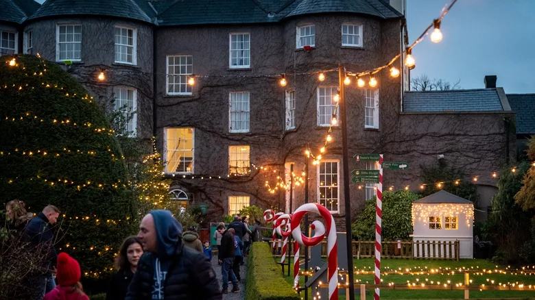
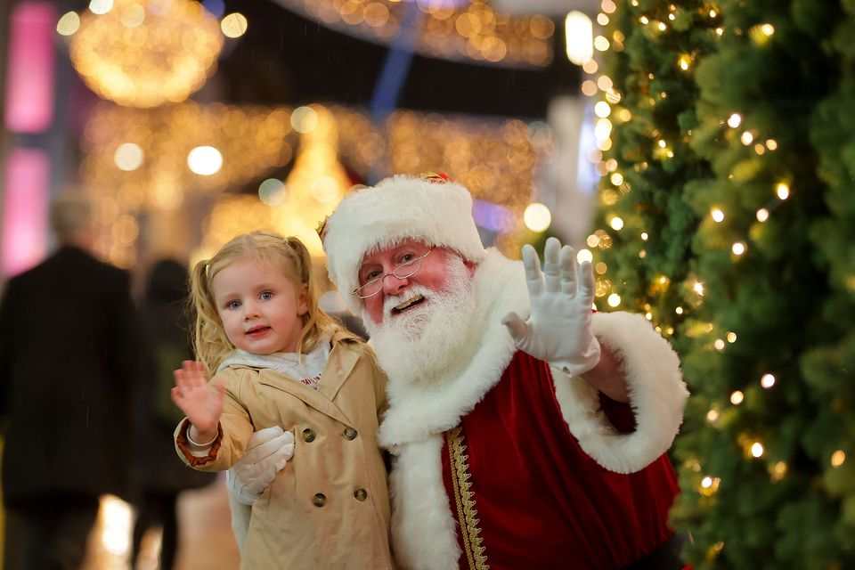

Ireland: Kilkenny

Home to Kilkenny Castle, one of the most magical spots in Ireland, Kilkenny is the former medieval capital of Ireland. Along with the castle, the town's historic courtyards and churches make for a picturesque backdrop for the town's month-long Yulefest celebration, which creatively combines historic and modern traditions. The James Stephens Military Barracks & Museum hosts a special reenactment of the WWI Christmas truce. Yulefest entertainment includes fire performers, jesters, pantomimes, and concerts of every genre. Kilkenny also has a Christmas market, Victorian carousel, ice skating rink, Christmas village, and more.
Celebrate Christmas in Kilkenny with Yulefest! Showcasing festive events across the county from November to January. Join us for Santa’s official arrival to the city on Saturday 30th of November to launch the 2024 Yulefest Christmas Market! Visitors to the festival can expect festive treats, creative crafts, live music and family entertainment each weekend, along with a Christmas light trail and special events each week.
Yulefest Christmas Market
Featured events at the 2024 festival include Santa’s arrival to Yulefest on Saturday November 30th; the Yulefest Christmas Market and live local music each weekend; the Medieval Mile Run on November 29th; the Christmas Tree Festival at St. Canice’s Cathedral December 5th-9th; Yulefest Movie Night on Thursday December 12th, and the Festive Finale on Saturday 21st December!

Plus Santa Experiences, Markets around the County, Music Concerts, Art Workshops and lots more! Follow us on Facebook or Instagram for programme announcements.
The Yulefest programme of events has something for everyone. Whether you’re looking for a festive staycation or family fun-activities, Yulefest Kilkenny has something for you. With great shopping and food as standard come celebrate the magic of Christmas and the wonders of winter in Kilkenny’s beautiful medieval city and county.